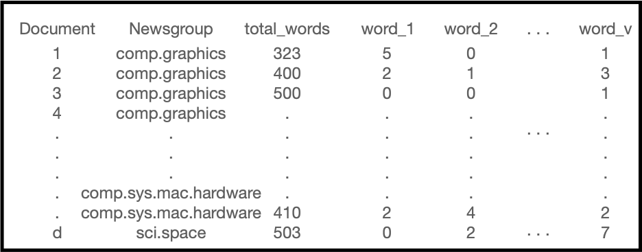

Lab 4: wrangling the written word
Due Friday February 17 at 5:00pm
“A [computer keyboard] is to me as a beak is to a hen.” — J. R. R. Tolkien (loosely)
By the end of the lab, you will…
- use regular expressions to build a data frame summarizing thousands of emails for the purposes of text classification in a future lab
Make sure everyone in your team knows when to stop committing! After 5pm on the due date will result in late penalty applying for the team, even if commit is “accidentally” pushed.
Getting started
In the terminal tab, type
cd ~to navigate to your home directory. Nextgit clone git@github.com:sta323-sp23/lab-4-team_name.gitwhereteam_nameis replaced with your team name (see the excel signup sheet in box or your github).Navigate to your
lab-4folder and open the.Rprojfile.Open the Quarto (
.qmd) file, change the author name to your team name followed by a colon and then the names of the team members.
Exercises
For all exercises, you should respond in the space provided in the template lab-4.qmd. Any task that says “print to the screen”, or “glimpse the data frame” etc. should be reproduced in your qmd and be visible upon rendering.
In this lab, there is only one exercise.
Exercise
Goal
The goal of this exercise is to build a data set for use in a future lab. The ultimate goal is to build an algorithm to classify which “class” each document belongs to.
Data
Download the data for this lab by pasting the code below into the console:
download.file("sta323-sp23.github.io/data/newsgroups_5.zip",
destfile = "ng_5.zip")
unzip("ng_5.zip", exdir = ".")There are 4989 documents. Each document is an email from one of 5 email listservs (news groups), that, as far as I can tell, were all hosted at Carnegie Mellon University in the early 90s. The original data set (with a total of 20 news groups) can be found here. This data set is a popular choice for experiments in text classification and clustering. Please note the following warning: similar to many modern forums on the internet, the emails in this data set may contain profanity and offensive language. I do not condone, endorse nor promote any language, views or content expressed within this data set.
The five document classes (newsgroups) are as follows:
comp.graphicscomp.sys.mac.hardwarerec.autosrec.sport.baseballsci.space
Task
We will comb through 12013 documents and construct a single data frame from these documents for use in a future lab. Our goal is to create a data frame that looks like the following:

where the column Document contains the documents name or #, Newsgroup contains the category the document belongs to, total_words contains the total words in the document, word_1, word_2 up to word_v contains every word in every document and the values represent the number of occurrences of each given word in the document.
To make this task more manageable, let’s break this into smaller tasks below:
part 1
Read in the data from the file 37916 with readLines, e.g. x = readLines("pathToFile/37916"). Write a regular expression to identify the “Newsgroup” from the text. Save the result as an object called newsgroup_id. Print newsgroup_id to the screen.
Some documents (emails) are featured in multiple newsgroups, separated by a comma ,. You should return a character vector of the newsgroups and can handle this like below:
"rec.autos,rec.autos.tech" %>%
str_split(",") %>%
unlist()[1] "rec.autos" "rec.autos.tech"part 2
Identify which part of the document is the body of the email. Write a regular expression to extract each word (alphanumeric) from the body of the email. Save a character vector of words in the email as an object called words_in_email. Print the first 10 words_in_email to the screen. The first three should be
"I" "recently" "got"- Find which entry has “Lines:”
- Subset the document
xto only be what occurs after this entry. - Extract each word followed by a break.
part 3
Save your result from part 1 and 2 into a list like so:
i = 37916
doc_i = list(
"doc_id" = paste("doc", i, sep = "_"),
"Newsgroup" = newsgroup_id,
"words" = words_in_email
)and then write a for loop, using the template code below as a starting point to make a list of lists for each document.
all_docs = list.files("/data/newsgroups_5")
doc_words = list()
# begin for loop over i in all_docs
# read in doc i
# create newsgroup_id
# create words_in_email
# put both together in a list called doc_i
doc_words[[paste("doc", i, sep = "_")]] = doc_i
# end for loopPrint the first three lists inside of doc_words using the code below:
doc_words[1:3] %>%
str()Use paste or paste0 to concatenate the filepath and filenames as you read them in.
part 4
Using the appropriate lookup functions from purrr (see lecture on functional programming) turn your list of lists doc_words into a tibble called doc_words_df that looks like the data frame pictured below. While building your data frame, remove all documents for which there are multiple newsgroups.
Document Newsgroup total_words words
<chr> <chr> <int> <list>
1 doc_100521 rec.sport.baseball 261 <chr [261]>
2 doc_101551 rec.autos 439 <chr [439]>
3 doc_101552 rec.autos 147 <chr [147]>Print the first 10 rows to the screen and glimpse your resulting data frame. There should be 3924 rows and 4 columns.
Finally, print a count of how many observations of each Newsgroup is in the data set.
Do not unnest the words column. This operation is too expensive to play with and may freeze your container/computer.
Style guidelines
All assignments in this course must employ proper coding style, as outlined below:
All code should obey the 80 character limit per line (i.e. no code should run off the page when rendering or require scrolling). To enable a vertical line in the RStudio IDE that helps guide this, see the style guidelines from lab 0 or ask a member of the teaching team for help.
All commas should be followed by a space.
All binary operators should be surrounded by space. For example
x + yis appropriate.x+yis not.All pipes
%>%or|>as well as ggplot layers+should be followed by a new line.You should be consistent with stylistic choices, e.g. only use 1 of
=vs<-and%>%vs|>Your name should be at the top (in the YAML) of each document under “author:”
All code chunks should be named (with names that don’t have spaces, e.g.
ex-1,ex-2etc.)File names in your GitHub repo such as
lab-x.qmdmust not be changed and left as provided. Additionally, your repo must pass certain basic checks. The results of these checks are visible on GitHub via the badges at the top of your README and the actions tab. These are meant to give you feedback around the structure and reproducibility of your repository and assignment - they do not assess the correctness of your work. You should consider them a necessary but not sufficient condition when turning in your work - passing all of the checks simply means your have met a minimum standard of reproducibility for the assignment.
Fundamentally, the check is making sure 1) you only have the files you should in your repository, 2) your .qmd renders.
If you have any questions about style, please ask a member of the teaching team.
Submitting your lab
To submit your assignment, simply commit and push your completed lab-x.qmd to your GitHub repo. Your most recent commit 48 hours after the assignment deadline will be graded, and any applicable late penalty will be applied (see the syllabus). For this reason, do not push commits after you are satisfied with your work, or a late penalty will be applied.